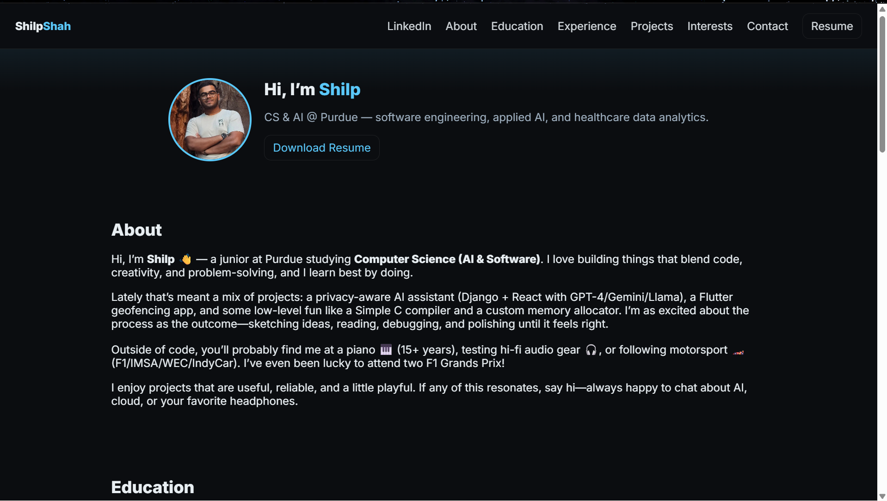
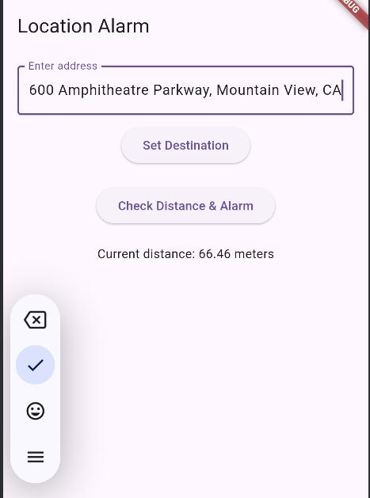
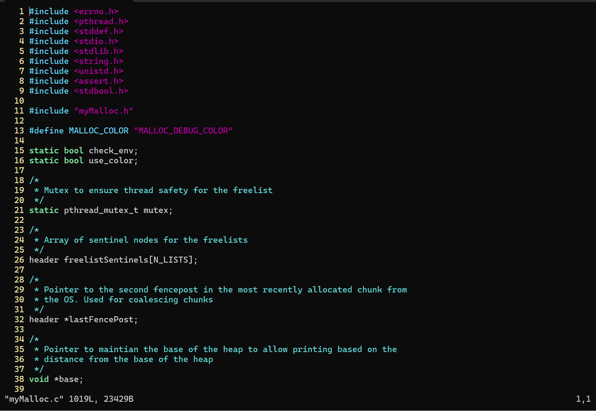
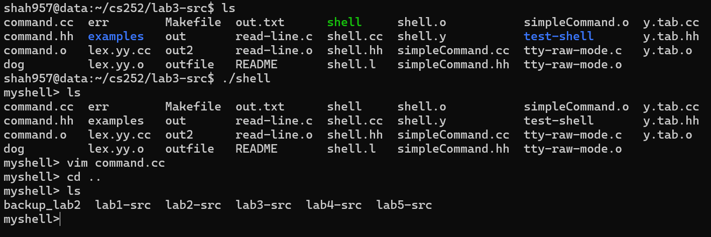
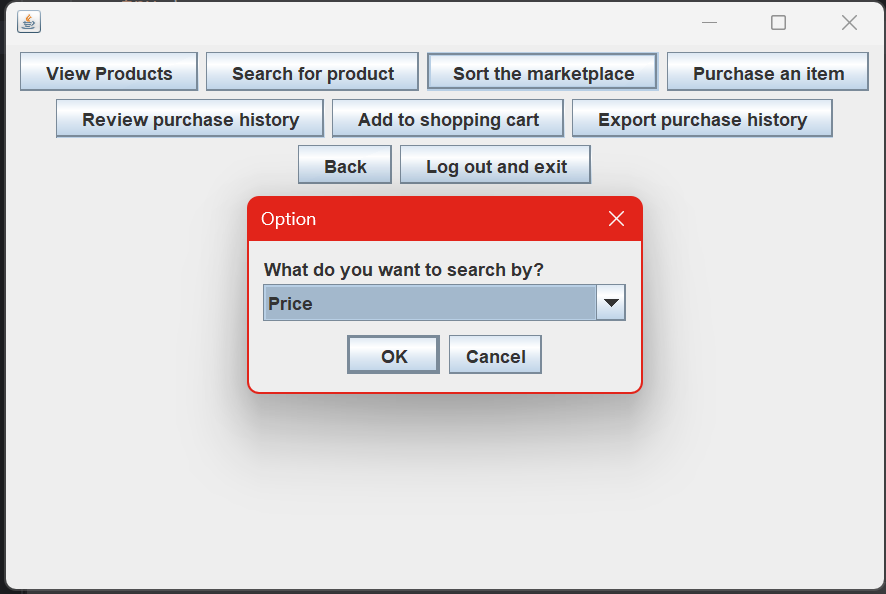

About
Hi, I’m Shilp 👋 — a junior at Purdue studying Computer Science (AI & Software). I love building things that blend code, creativity, and problem-solving, and I learn best by doing.
Lately that’s meant a mix of projects: a privacy-aware AI assistant (Django + React with GPT-4/Gemini/Llama), a Flutter geofencing app, and some low-level fun like a Simple C compiler and a custom memory allocator. I’m as excited about the process as the outcome—sketching ideas, reading, debugging, and polishing until it feels right.
Outside of code, you’ll probably find me at a piano 🎹 (15+ years), testing hi-fi audio gear 🎧, or following motorsport 🏎️ (F1/IMSA/WEC/IndyCar). I’ve even been lucky to attend two F1 Grands Prix!
I enjoy projects that are useful, reliable, and a little playful. If any of this resonates, say hi—always happy to chat about AI, cloud, or your favorite headphones.
Education
Purdue University — West Lafayette
Junior, B.S. in Computer Science (SWE & ML concentrations), Artificial Intelligence; Certificate in Data Science
Expected Graduation: May 2027 • Dean’s List and Semester Honors
Certifications: Microsoft Azure Fundamentals (AZ-900), CITI (Human Subjects Research)
Experience
-
- Built an R package & Shiny app to support Phase 2 go/no-go drug development decisions.
- Integrated MBMA, PBPK, and QSP models to improve predictive probabilities and strengthen clinical decision-making.
- Collaborated with J&J researchers on healthcare data science and translational medicine use cases.
-
- Led a 10-member team to develop a secure AI assistant with Django + React; integrated GPT-4, Gemini, Llama for hybrid inference.
- Implemented LLM streaming, zero-retention APIs, and on-device inference to enable secure document Q&A.
- Co-presented research at the TDM Symposium on privacy-preserving AI methods.
-
- Resolved Tier-1 issues (MFA, identity, networking) while managing tickets in ITSM and ensuring SLA compliance.
-
- Built and configured a Proposal Management app in Salesforce CRM, modernizing client proposal workflows.
- Supported admin tasks, certification prep, and gained exposure to cloud computing within Salesforce.
-
- Assisted with Salesforce org-wide configuration, user role management, and security policies.
- Built reports and dashboards to improve decision-making using cloud-based CRM tools.
Projects
-

Designed and shipped a modern, responsive portfolio as a static site with semantic HTML, modular CSS, and vanilla JavaScript. Implemented hover/click dropdowns for Projects & Experience, a light/dark theme toggle persisted via localStorage, and accessible patterns (structured headings, ARIA roles/states). Code hosted on GitHub with a GitHub Actions pipeline that auto-deploys to Azure Static Web Apps (Free) on merge—HTTPS and custom domain ready.
-

Location-based alarm that triggers when you approach a destination — handy for commutes. Built in Flutter with geofencing, offline maps, and background polling. Includes transport-aware thresholds to avoid false triggers on highways or slow traffic.
- Google Maps SDK + custom geofence ring with dynamic radius controls.
- Background task scheduling for iOS/Android with battery-aware intervals.
- Address autocomplete, saved locations, and silent test alerts.
- Local notifications with snooze / dismiss actions.
-

A thread-safe allocator in C implementing
malloc/free/realloc. Focused on fragmentation reduction and predictable performance under contention.- Segregated free lists by size class; best-fit within class for locality.
- Block headers/footers with coalescing on free; split/merge heuristics.
- Mutex protection + minimal critical sections to reduce lock time.
- Alignment guarantees and guard checks in debug mode.
-

Compiler for a C-like language (“SimpleC”) using Lex/Yacc. Generates x86-64 assembly with basic optimizations and a clean IR.
- Lexer + parser for expressions, control flow, and pointers.
- Symbol table + type checking; stack-based calling convention.
- IR passes for constant folding and dead-code elimination (selective).
- Codegen to AT&T syntax with register allocation and spill handling.
-

Multi-user marketplace in Java with GUI, concurrency support, and network I/O. Simulates product listings, carts, and transactional updates with consistent state across clients.
- Client-server architecture with request/response protocol and auth.
- Thread-safe inventory operations; basic optimistic concurrency.
- Serialized persistence layer for snapshot + restore.
- Swing/JavaFX GUI with table view, filters, and error boundaries.
Interests
- 🎹Music — 15+ years of piano; hi-fi audio gear enthusiast.
- 🏎️Motorsports — follow F1/IMSA/WEC/IndyCar; love karting; attended 2 F1 GPs.
- 🌍Travel & Culture — exploring new places and cuisines.
- 💻Tech & AI — tinkering with models, tools, side projects.